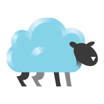

See it
Microsoft 365 and Google, side by side.



Microsoft 365 and Google in one GNOME-native window.
OneDrive · SharePoint · Teams · Mail · Calendar · Chat · OneNote
Cloudy orchestrates proven backends — rclone for file mounts, Microsoft Graph and Google REST for mail and calendar — behind one adaptive interface.
OneDrive, SharePoint and Teams libraries mount as two-way network drives in GNOME Files and an in-app browser — not synced copies.
Read, compose and reply across Microsoft and Google, with Me / Teams / Shared mailbox sources in one place.
A month grid and agenda spanning every account, with event create, edit, delete and RSVP.
A Teams-style messenger for Teams chats and Google Chat — 1:1, group and meeting threads with images, reactions, @mentions, edits, delivery status and live updates.
Browse your Teams and channels, read and reply to channel posts with threaded replies, and open a channel's OneNote notebook — read pages with inline images, or create and edit them.
Upcoming events, recent mail and file changes across every account — plus an Activity feed of recent chats and the latest posts in the channels you star.
Acts as the system mail and calendar handler, raises new-mail notifications, and shows status in the file manager.
Mail and event alerts that honour system Do Not Disturb and your own quiet hours, with a priority filter and per-chat mute so only what matters interrupts you — badges still update quietly.
OAuth tokens are stored in the system keyring — never in plain text. No third-party servers; the repo ships zero secrets.
Microsoft 365 and Google, side by side.
Built and tested for Fedora 44 (GNOME 50).
Flatpak (single-file bundle from a release):
flatpak install --user ./io.github.sha5b.Cloudy.flatpak
RPM:
sudo dnf install ./cloudy-*.noarch.rpm
From source:
git clone https://github.com/sha5b/Cloudy.git cd Cloudy make run
Cloudy ships no OAuth credentials in source; see the repository's docs for setup.